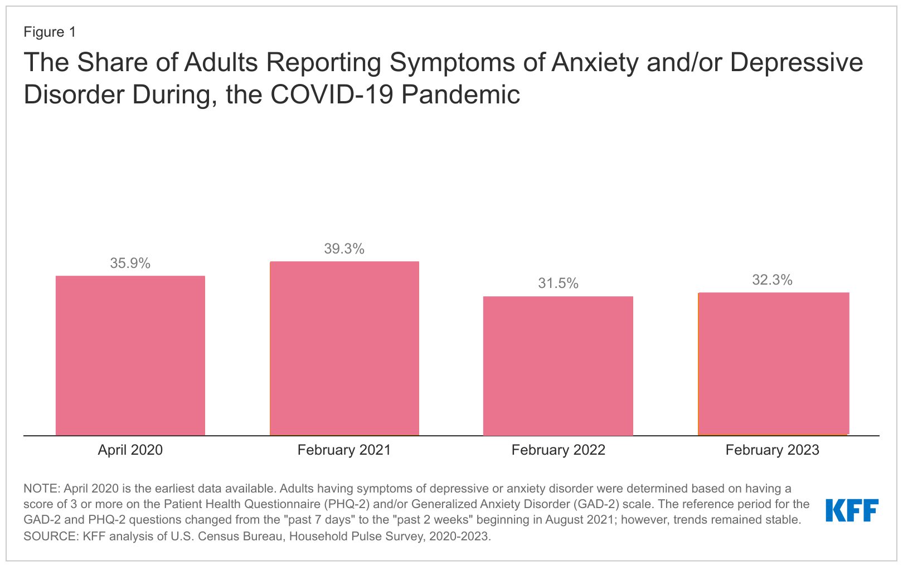

A Detail of Research done relating to Mental Health during the pandemic
The Share of Adults Reporting Symptoms of Anxiety and/or Depressive Disorder During, the COVID-19 Pandemic
The Psychological Impact of Quarantine and How to Reduce It: Rapid Review of the Evidence
This study conducted a rapid review of 24 studies published in peer-reviewed journals that assessed the psychological impact of quarantine during the COVID-19 pandemic. The review found that quarantine can have a negative psychological impact on individuals, leading to symptoms such as stress, anxiety, depression, and post-traumatic stress disorder (PTSD). The negative effects of quarantine are more pronounced in certain populations, including healthcare workers, children, and those with pre-existing mental health conditions. The authors suggest that several interventions can be used to reduce the psychological impact of quarantine, such as providing clear and accurate information about the outbreak, ensuring access to basic supplies and medical care, providing social support, and offering mental health services. It suggests that interventions should be tailored to the specific needs of different populations, such as providing specialized mental health services for healthcare workers. In conclusion, the article highlights the need for a comprehensive approach to manage the psychological impact of quarantine during infectious disease outbreaks. It emphasizes the importance of providing support and interventions that are tailored to the needs of different populations to minimize the negative psychological impact of quarantine.
Mental health in the post-COVID-19 era: challenges and the way forward
This study conducted a rapid review of relevant studies and found that quarantine can lead to a range of psychological symptoms, including stress, anxiety, depression, irritability, insomnia, and post-traumatic stress symptoms. The authors suggest that interventions such as providing accurate and timely information, ensuring access to basic needs, promoting social support, and facilitating remote communication can help reduce the negative psychological impact of quarantine. It recommends that policymakers consider the psychological consequences of quarantine when designing quarantine policies and that further research is needed to better understand the psychological effects of quarantine and identify effective interventions.
Post COVID-19 pandemic mental health challenges
The author conducted a literature review of relevant studies and found that the pandemic has had a significant impact on mental health, leading to increased rates of anxiety, depression, post-traumatic stress disorder (PTSD), and substance abuse. The author also identified several factors contributing to this impact, including social isolation, financial stress, and fear of infection. The study emphasizes the need for interventions to address the mental health consequences of the pandemic, including providing support and resources to those affected, reducing stigma surrounding mental health issues, and investing in mental health services. The study highlights the importance of addressing the long-term mental health consequences of the COVID-19 pandemic to promote recovery and resilience in affected populations.